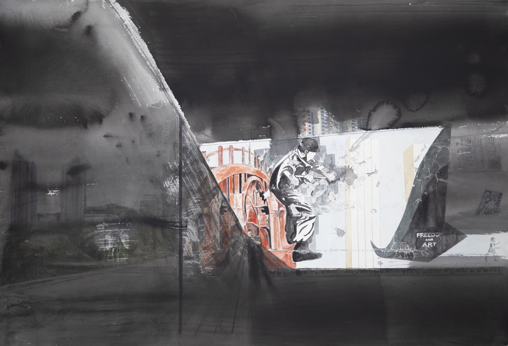

Impression of Dafen
大芬印象

- Artwork ID / 作品编号
- KW-W-000014
- Year / 年份
- 2022
- Medium / 媒介
- Watercolor on paper / 纸本水彩
- Dimensions / 尺寸
- 79 × 109 cm (H × W / 高 × 宽)
About the work / 作品介绍
Dafen Impression is inspired by Shenzhen's Dafen Oil Painting Village, where dramatic light structures the entire composition. Sunlight cuts through the streets, illuminating graffiti walls, glass surfaces, and distant buildings, transforming an ordinary urban scene into a space between reality and imagination.Rather than documenting a specific location, the work reflects the presence of art within the city. Graffiti, architecture, glass, and light together create an open field of relationships that accommodates diverse forms of artistic expression. Light becomes the spiritual thread of the painting, revealing creativity, openness, and vitality embedded in everyday urban life.
《大芬印象》取景于深圳大芬油画村，以强烈的光影关系建构画面空间。耀眼的阳光穿过街巷，照亮涂鸦墙、玻璃立面与远处的城市建筑，使现实场景呈现出介于真实与梦境之间的视觉体验。作品并非记录一处街景，而是描绘艺术在城市中的存在状态。涂鸦、建筑、玻璃与光共同形成开放的关系场域，承载着不同创作者的表达，也映照着艺术与日常生活不断交汇、融合的过程。光线成为画面的精神线索，在明暗转换之间，引导观看者重新感受城市空间中的创造力、包容性与生命活力。